Vietnam
Field work in Vietnam consists of a qualitative assessment with focus group discussions and quantitative surveys. We first look at the consolidated survey results.
Notes:
- 1 Int’l $ = 7,473.67 VND (Vietnamese Dong) using 2020 World Bank PPP conversion rates (1 Int’l $ = 1 USD)
- Focus crop = rice
- Transportation costs are lumped into the cost of pesticides, fertilizers and harvesting.
- Labor costs are per hectare
- Inspection and certification fees are per farm (total fees for a single season). Only farmers who sell to seed centers or seed companies do incur these marketing costs.
- We differentiate between expected yield per ha
yield_ha_kgand realized sales in the last seasonsales_ha_kg.
Survey Recodes
xrate <- 7473.67
# Load respondent data
hh <- fread("../data/vnm/hh.csv")
# Load group data
group <- fread("../data/vnm/group.csv")There are 21 variables and 60 observations in this set. A summary is shown below.
print(dfSummary(hh),
max.tbl.height=500, table.classes="table-condensed", method="render")Error : thematic doesn’t (yet) support the ‘PNG’ graphics device. Please report this error to https://github.com/rstudio/thematic/issues/new Error : thematic doesn’t (yet) support the ‘PNG’ graphics device. Please report this error to https://github.com/rstudio/thematic/issues/new Error : thematic doesn’t (yet) support the ‘PNG’ graphics device. Please report this error to https://github.com/rstudio/thematic/issues/new Error : thematic doesn’t (yet) support the ‘PNG’ graphics device. Please report this error to https://github.com/rstudio/thematic/issues/new Error : thematic doesn’t (yet) support the ‘PNG’ graphics device. Please report this error to https://github.com/rstudio/thematic/issues/new Error : thematic doesn’t (yet) support the ‘PNG’ graphics device. Please report this error to https://github.com/rstudio/thematic/issues/new Error : thematic doesn’t (yet) support the ‘PNG’ graphics device. Please report this error to https://github.com/rstudio/thematic/issues/new Error : thematic doesn’t (yet) support the ‘PNG’ graphics device. Please report this error to https://github.com/rstudio/thematic/issues/new Error : thematic doesn’t (yet) support the ‘PNG’ graphics device. Please report this error to https://github.com/rstudio/thematic/issues/new Error : thematic doesn’t (yet) support the ‘PNG’ graphics device. Please report this error to https://github.com/rstudio/thematic/issues/new Error : thematic doesn’t (yet) support the ‘PNG’ graphics device. Please report this error to https://github.com/rstudio/thematic/issues/new Error : thematic doesn’t (yet) support the ‘PNG’ graphics device. Please report this error to https://github.com/rstudio/thematic/issues/new Error : thematic doesn’t (yet) support the ‘PNG’ graphics device. Please report this error to https://github.com/rstudio/thematic/issues/new Error : thematic doesn’t (yet) support the ‘PNG’ graphics device. Please report this error to https://github.com/rstudio/thematic/issues/new Error : thematic doesn’t (yet) support the ‘PNG’ graphics device. Please report this error to https://github.com/rstudio/thematic/issues/new Error : thematic doesn’t (yet) support the ‘PNG’ graphics device. Please report this error to https://github.com/rstudio/thematic/issues/new Error : thematic doesn’t (yet) support the ‘PNG’ graphics device. Please report this error to https://github.com/rstudio/thematic/issues/new Error : thematic doesn’t (yet) support the ‘PNG’ graphics device. Please report this error to https://github.com/rstudio/thematic/issues/new Error : thematic doesn’t (yet) support the ‘PNG’ graphics device. Please report this error to https://github.com/rstudio/thematic/issues/new Error : thematic doesn’t (yet) support the ‘PNG’ graphics device. Please report this error to https://github.com/rstudio/thematic/issues/new
| Variable | Stats / Values | Freqs (% of Valid) | Graph | Valid | Missing | |||||||||||||||||||||||||||||||||||||||||||||||||||||||
|---|---|---|---|---|---|---|---|---|---|---|---|---|---|---|---|---|---|---|---|---|---|---|---|---|---|---|---|---|---|---|---|---|---|---|---|---|---|---|---|---|---|---|---|---|---|---|---|---|---|---|---|---|---|---|---|---|---|---|---|---|
| Code [character] |
|
|
 |
60 (100.0%) | 0 (0.0%) | |||||||||||||||||||||||||||||||||||||||||||||||||||||||
| Age [integer] |
|
32 distinct values |  |
60 (100.0%) | 0 (0.0%) | |||||||||||||||||||||||||||||||||||||||||||||||||||||||
| Sex [character] |
|
|
 |
60 (100.0%) | 0 (0.0%) | |||||||||||||||||||||||||||||||||||||||||||||||||||||||
| Group [character] |
|
|
 |
60 (100.0%) | 0 (0.0%) | |||||||||||||||||||||||||||||||||||||||||||||||||||||||
| Province [character] |
|
|
 |
60 (100.0%) | 0 (0.0%) | |||||||||||||||||||||||||||||||||||||||||||||||||||||||
| How long have you been a member of this group? [integer] |
|
18 distinct values |  |
60 (100.0%) | 0 (0.0%) | |||||||||||||||||||||||||||||||||||||||||||||||||||||||
| Cost seed per ha (LCU) [integer] |
|
45 distinct values |  |
60 (100.0%) | 0 (0.0%) | |||||||||||||||||||||||||||||||||||||||||||||||||||||||
| Cost of fertilizer per ha (LCU) [integer] |
|
59 distinct values |  |
60 (100.0%) | 0 (0.0%) | |||||||||||||||||||||||||||||||||||||||||||||||||||||||
| Cost of pesticide per ha (LCU) [integer] |
|
60 distinct values |  |
60 (100.0%) | 0 (0.0%) | |||||||||||||||||||||||||||||||||||||||||||||||||||||||
| Cost of transport per ha (LCU) [logical] |
|
0 (0.0%) | 60 (100.0%) | |||||||||||||||||||||||||||||||||||||||||||||||||||||||||
| Labor cost (LCU) [integer] |
|
58 distinct values |  |
60 (100.0%) | 0 (0.0%) | |||||||||||||||||||||||||||||||||||||||||||||||||||||||
| Inspection / certification Fees (LCU) [integer] |
|
|
 |
60 (100.0%) | 0 (0.0%) | |||||||||||||||||||||||||||||||||||||||||||||||||||||||
| Labelling costs per kg (LCU) [integer] | 1 distinct value |
|
 |
60 (100.0%) | 0 (0.0%) | |||||||||||||||||||||||||||||||||||||||||||||||||||||||
| Packaging costs per kg (LCU) [integer] |
|
|
 |
60 (100.0%) | 0 (0.0%) | |||||||||||||||||||||||||||||||||||||||||||||||||||||||
| Other marketing costs? (LCU) [integer] | 1 distinct value |
|
|
60 (100.0%) | 0 (0.0%) | |||||||||||||||||||||||||||||||||||||||||||||||||||||||
| Estimated Yield (kg/ha) [integer] |
|
25 distinct values |  |
60 (100.0%) | 0 (0.0%) | |||||||||||||||||||||||||||||||||||||||||||||||||||||||
| Selling price of seed per kg (LCU) [integer] |
|
19 distinct values |  |
60 (100.0%) | 0 (0.0%) | |||||||||||||||||||||||||||||||||||||||||||||||||||||||
| How many kg were sold in the season? [integer] |
|
29 distinct values |  |
60 (100.0%) | 0 (0.0%) | |||||||||||||||||||||||||||||||||||||||||||||||||||||||
| What was your expected gross margin? [numeric] |
|
33 distinct values |  |
60 (100.0%) | 0 (0.0%) | |||||||||||||||||||||||||||||||||||||||||||||||||||||||
| Total production cost [integer] |
|
60 distinct values |  |
60 (100.0%) | 0 (0.0%) | |||||||||||||||||||||||||||||||||||||||||||||||||||||||
| Gross sales [integer] |
|
49 distinct values |  |
60 (100.0%) | 0 (0.0%) |
Generated by summarytools 1.0.0 (R version 3.6.3)
2021-08-05
Recode variable names (see codebook).
setnames(hh, lbl$label, lbl$code, skip_absent=T)Additional recodes for categorical variables. Note that we create a categorical variable ssd to indicate whether a farmer currently engages in formal seed system distribution. For consistency across countries we also reclassify age into 2 categories < 30 and ≥ 30.
setorder(hh, adm1_nm, group, gender)
hh[, `:=`(
hhid = paste("VNM", gsub(" ", "0", format(1:.N, width=3)), sep=""),
iso3 = "VNM",
crop = "rice",
adm1_nm = factor(adm1_nm),
group = factor(group, levels=hh[, unique(group)]),
gender = factor(gender, levels=c("Nam", "Nữ"), labels=c("Male", "Female")),
ssd = factor(cert_lcu > 0, levels=c(F, T), labels=c("Informal", "Formal")),
age_num = age,
age = factor(age >= 30, levels=c(F, T), labels=c("< 30", "≥ 30")),
years = factor(member_years >= 5, levels=c(F, T), labels=c("< 5", "≥ 5"))
)]Spatial Covariates
Using community GPS coordinates we also suggest to enrich this dataset with additional biophysical and geospatial variables, e.g.:
- Agroecological zone
- Travel time to nearest market
- Distance to nearest seed center / company
- Size of nearest seed center / company
- Population density
- Last season total rainfall
- Last season heat stress days (if any)
[pending GPS coordinates]
Constructed Variables
Farmers report both expected yields yield_ha_kg and actual sales in the last season sales_ha_kg, so we can construct both expected and realized costs in monetary terms costs_exp_ha_lcu and costs_real_ha_lcu. Note that we then use realized sales to calculate profitability metrics.
hh[,
tran_ha_lcu := as.numeric(tran_ha_lcu)
][,
tran_ha_lcu := fifelse(is.na(tran_ha_lcu), 0, tran_ha_lcu)
][, `:=`(
# Expected costs
costs_exp_ha_lcu =
# Per ha costs
seed_ha_lcu + fert_ha_lcu + pest_ha_lcu + tran_ha_lcu + labor_ha_lcu + cert_lcu +
# Per kg costs
yield_ha_kg * (labl_kg_lcu + pckg_kg_lcu + mark_kg_lcu),
# Realized costs
costs_real_ha_lcu =
# Per ha costs
seed_ha_lcu + fert_ha_lcu + pest_ha_lcu + tran_ha_lcu + labor_ha_lcu + cert_lcu +
# Per kg costs
sales_ha_kg * (labl_kg_lcu + pckg_kg_lcu + mark_kg_lcu)
)]Using realized costs and sales, we construct gross margin per ha margin_ha_lcu, total sales sales_ha_sh and profit margin margin_ha_sh per unit of (variable) input costs, and costs_ha_ppp, sales_ha_ppp and margin_ha_ppp in PPP terms to allow for comparisons across groups and countries.
We also construct a measure of total factor productivity tfp as expected output per unit of (expected) input costs. Strictly speaking it is only “partial factor productivity” here because we don’t include the rental cost of land, land preparation costs, irrigation costs, and the costs of animal and mechanical implements.
hh[, `:=`(
sales_exp_ha_lcu = yield_ha_kg * sales_kg_lcu,
sales_real_ha_lcu = sales_ha_kg * sales_kg_lcu
)][, `:=`(
margin_ha_lcu = sales_real_ha_lcu - costs_real_ha_lcu
)][, `:=`(
# Shares
sales_ha_sh = sales_real_ha_lcu / costs_real_ha_lcu,
margin_ha_sh = margin_ha_lcu / costs_real_ha_lcu,
# PPP$
costs_ha_ppp = costs_real_ha_lcu / xrate,
sales_ha_ppp = sales_real_ha_lcu / xrate,
margin_ha_ppp = margin_ha_lcu / xrate
)][, `:=`(
tfp = yield_ha_kg / (costs_exp_ha_lcu / xrate)
)]Below we append some of the information that was recorded at the group level.
kbl(group, align="lccccccc")| Group | Established | Members | Soil | Seasons | Irrigation | Market access | Transboundary trade |
|---|---|---|---|---|---|---|---|
| Ta Ben | 2001 | 30 | loamy | 2.0 | good | Vicinity to local market, good road to infrastructure | No |
| Trung Hiep | 2003 | 8 | sandy-silty | 2.5 | good | Vicinity to local market, good road to infrastructure | No |
| Vinh Trach | 2004 | 15 | clay | 3.0 | good | Vicinity to local market, good road to infrastructure | Yes |
| Binh My | 2004 | 8 | clay | 3.0 | good | Vicinity to local market, good road to infrastructure | Yes |
| Vinh Qui | 2002 | 40 | clay | 3.0 | good | Vicinity to local market, good road to infrastructure | Yes |
# Merge
hh[group, on=.(group=Group), `:=`(
group_year = `Established`,
group_size = `Members`,
soil_type = `Soil`,
seasons = `Seasons`,
irrigated = `Irrigation`,
market_access = `Market access`,
ttrade = `Transboundary trade`
)]Finally we normalize all farmer cost line items into a “long” table hh_prod_cost for charting.
# Normalize production cost table
hh_prod_cost <- hh[, .(hhid,
Seeds = seed_ha_lcu,
Fertilizer = fert_ha_lcu,
Pesticides = pest_ha_lcu,
Labor = labor_ha_lcu,
Transport = tran_ha_lcu,
Certification = cert_lcu,
Labeling = sales_ha_kg * labl_kg_lcu,
Packaging = sales_ha_kg * pckg_kg_lcu,
Marketing = sales_ha_kg * mark_kg_lcu
)]
hh_prod_cost <- melt(hh_prod_cost, id.vars=1, value.name="lcu", variable.name="type")And we lump all marketing costs into a single category.
levels(hh_prod_cost$type) <- levels(hh_prod_cost$type)[c(1,2,3,4,9,9,9,9,9)]
hh_prod_cost <- hh_prod_cost[, .(
lcu = sum(lcu, na.rm=T)
), by=.(hhid, type)
][, `:=`(
# Add cost shares and PPP terms
share = lcu/sum(lcu, na.rm=T),
ppp = lcu/xrate
), by=.(hhid)
][hh, on=.(hhid), `:=`(
# Add categorical variables
group = group,
gender = gender,
age = age,
years = years,
crop = crop,
ssd = ssd
)]Note that in the current survey we are missing farm sizes (or planted acreage), so we can not directly study the effect of farm size on the per-unit costs of production and yields, or look at potential scale effects on a farmer’s efficiency and profitability. We can however study whether larger groups might have positive effects.
Descriptive Statistics
Respondent Characteristics
Breakdown by categorical variables.
ggplot(
hh[, .N, by=.(group, age, gender, crop, years)],
aes(axis1=crop, axis2=gender, axis3=age, axis4=years, y=N)) +
geom_alluvium(aes(fill=group), width=1/4, alpha=.7, color="white") +
geom_stratum(width=1/4) +
geom_text(stat="stratum", aes(label=after_stat(stratum)), angle=90, size=2.2) +
scale_x_discrete(limits=c("Crop", "Gender", "Age", "Years in Seed Club")) +
labs(y=NULL, fill="Seed Club",
title = "Categories of Survey Respondents - Vietnam",
subtitle = "Stratified by seed club") +
theme_def(axis.text=element_text(face="bold"))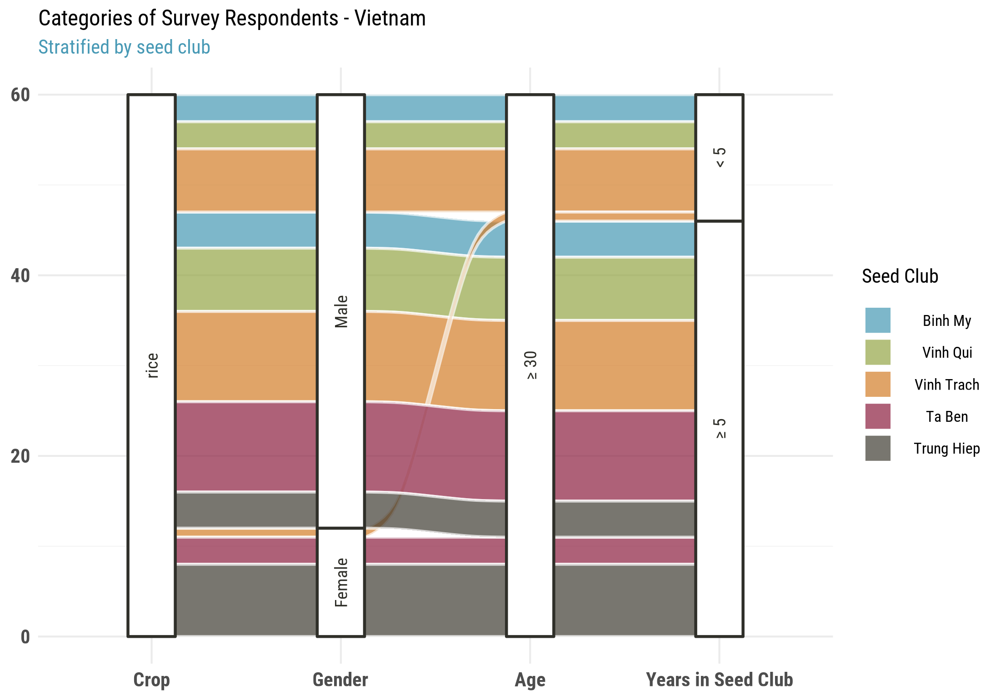
Showing contingency table between each pair of categorical variables (seed club group, gender, years in seed club years, and use of formal seed system distribution ssd). Rice in Vietnam is a male-dominated production, hence the absence of female respondents in a few clubs.
print(ctable(hh$group, hh$gender, chisq=T, round.digits=0,
dnn=c("Group", "Gender")),
table.classes="table-condensed", method="render")| Gender | |||||||||||||||||||||||||||||||||||||||||||||||||||||||||||||||||||||||||||||||||||||||||||||||||||
|---|---|---|---|---|---|---|---|---|---|---|---|---|---|---|---|---|---|---|---|---|---|---|---|---|---|---|---|---|---|---|---|---|---|---|---|---|---|---|---|---|---|---|---|---|---|---|---|---|---|---|---|---|---|---|---|---|---|---|---|---|---|---|---|---|---|---|---|---|---|---|---|---|---|---|---|---|---|---|---|---|---|---|---|---|---|---|---|---|---|---|---|---|---|---|---|---|---|---|---|
| Group | Male | Female | Total | ||||||||||||||||||||||||||||||||||||||||||||||||||||||||||||||||||||||||||||||||||||||||||||||||
| Binh My | 7 | ( | 100% | ) | 0 | ( | 0% | ) | 7 | ( | 100% | ) | |||||||||||||||||||||||||||||||||||||||||||||||||||||||||||||||||||||||||||||||||||||||
| Vinh Qui | 10 | ( | 100% | ) | 0 | ( | 0% | ) | 10 | ( | 100% | ) | |||||||||||||||||||||||||||||||||||||||||||||||||||||||||||||||||||||||||||||||||||||||
| Vinh Trach | 17 | ( | 94% | ) | 1 | ( | 6% | ) | 18 | ( | 100% | ) | |||||||||||||||||||||||||||||||||||||||||||||||||||||||||||||||||||||||||||||||||||||||
| Ta Ben | 10 | ( | 77% | ) | 3 | ( | 23% | ) | 13 | ( | 100% | ) | |||||||||||||||||||||||||||||||||||||||||||||||||||||||||||||||||||||||||||||||||||||||
| Trung Hiep | 4 | ( | 33% | ) | 8 | ( | 67% | ) | 12 | ( | 100% | ) | |||||||||||||||||||||||||||||||||||||||||||||||||||||||||||||||||||||||||||||||||||||||
| Total | 48 | ( | 80% | ) | 12 | ( | 20% | ) | 60 | ( | 100% | ) | |||||||||||||||||||||||||||||||||||||||||||||||||||||||||||||||||||||||||||||||||||||||
| Χ2 = 23.0075 df = 4 p = .0001 |
|||||||||||||||||||||||||||||||||||||||||||||||||||||||||||||||||||||||||||||||||||||||||||||||||||
Generated by summarytools 1.0.0 (R version 3.6.3)
2021-08-05
print(ctable(hh$group, hh$ssd, chisq=T, round.digits=0,
dnn=c("Group", "Seed System")),
table.classes="table-condensed", method="render")| Seed System | |||||||||||||||||||||||||||||||||||||||||||||||||||||||||||||||||||||||||||||||||||||||||||||||||||
|---|---|---|---|---|---|---|---|---|---|---|---|---|---|---|---|---|---|---|---|---|---|---|---|---|---|---|---|---|---|---|---|---|---|---|---|---|---|---|---|---|---|---|---|---|---|---|---|---|---|---|---|---|---|---|---|---|---|---|---|---|---|---|---|---|---|---|---|---|---|---|---|---|---|---|---|---|---|---|---|---|---|---|---|---|---|---|---|---|---|---|---|---|---|---|---|---|---|---|---|
| Group | Informal | Formal | Total | ||||||||||||||||||||||||||||||||||||||||||||||||||||||||||||||||||||||||||||||||||||||||||||||||
| Binh My | 6 | ( | 86% | ) | 1 | ( | 14% | ) | 7 | ( | 100% | ) | |||||||||||||||||||||||||||||||||||||||||||||||||||||||||||||||||||||||||||||||||||||||
| Vinh Qui | 10 | ( | 100% | ) | 0 | ( | 0% | ) | 10 | ( | 100% | ) | |||||||||||||||||||||||||||||||||||||||||||||||||||||||||||||||||||||||||||||||||||||||
| Vinh Trach | 16 | ( | 89% | ) | 2 | ( | 11% | ) | 18 | ( | 100% | ) | |||||||||||||||||||||||||||||||||||||||||||||||||||||||||||||||||||||||||||||||||||||||
| Ta Ben | 13 | ( | 100% | ) | 0 | ( | 0% | ) | 13 | ( | 100% | ) | |||||||||||||||||||||||||||||||||||||||||||||||||||||||||||||||||||||||||||||||||||||||
| Trung Hiep | 11 | ( | 92% | ) | 1 | ( | 8% | ) | 12 | ( | 100% | ) | |||||||||||||||||||||||||||||||||||||||||||||||||||||||||||||||||||||||||||||||||||||||
| Total | 56 | ( | 93% | ) | 4 | ( | 7% | ) | 60 | ( | 100% | ) | |||||||||||||||||||||||||||||||||||||||||||||||||||||||||||||||||||||||||||||||||||||||
| Χ2 = 2.9209 df = 4 p = .5711 |
|||||||||||||||||||||||||||||||||||||||||||||||||||||||||||||||||||||||||||||||||||||||||||||||||||
Generated by summarytools 1.0.0 (R version 3.6.3)
2021-08-05
print(ctable(hh$group, hh$years, chisq=T, round.digits=0,
dnn=c("Group", "Years in Seed Club")),
table.classes="table-condensed", method="render")| Years in Seed Club | |||||||||||||||||||||||||||||||||||||||||||||||||||||||||||||||||||||||||||||||||||||||||||||||||||
|---|---|---|---|---|---|---|---|---|---|---|---|---|---|---|---|---|---|---|---|---|---|---|---|---|---|---|---|---|---|---|---|---|---|---|---|---|---|---|---|---|---|---|---|---|---|---|---|---|---|---|---|---|---|---|---|---|---|---|---|---|---|---|---|---|---|---|---|---|---|---|---|---|---|---|---|---|---|---|---|---|---|---|---|---|---|---|---|---|---|---|---|---|---|---|---|---|---|---|---|
| Group | < 5 | ≥ 5 | Total | ||||||||||||||||||||||||||||||||||||||||||||||||||||||||||||||||||||||||||||||||||||||||||||||||
| Binh My | 3 | ( | 43% | ) | 4 | ( | 57% | ) | 7 | ( | 100% | ) | |||||||||||||||||||||||||||||||||||||||||||||||||||||||||||||||||||||||||||||||||||||||
| Vinh Qui | 3 | ( | 30% | ) | 7 | ( | 70% | ) | 10 | ( | 100% | ) | |||||||||||||||||||||||||||||||||||||||||||||||||||||||||||||||||||||||||||||||||||||||
| Vinh Trach | 8 | ( | 44% | ) | 10 | ( | 56% | ) | 18 | ( | 100% | ) | |||||||||||||||||||||||||||||||||||||||||||||||||||||||||||||||||||||||||||||||||||||||
| Ta Ben | 0 | ( | 0% | ) | 13 | ( | 100% | ) | 13 | ( | 100% | ) | |||||||||||||||||||||||||||||||||||||||||||||||||||||||||||||||||||||||||||||||||||||||
| Trung Hiep | 0 | ( | 0% | ) | 12 | ( | 100% | ) | 12 | ( | 100% | ) | |||||||||||||||||||||||||||||||||||||||||||||||||||||||||||||||||||||||||||||||||||||||
| Total | 14 | ( | 23% | ) | 46 | ( | 77% | ) | 60 | ( | 100% | ) | |||||||||||||||||||||||||||||||||||||||||||||||||||||||||||||||||||||||||||||||||||||||
| Χ2 = 13.8332 df = 4 p = .0078 |
|||||||||||||||||||||||||||||||||||||||||||||||||||||||||||||||||||||||||||||||||||||||||||||||||||
Generated by summarytools 1.0.0 (R version 3.6.3)
2021-08-05
Seed Production Costs
General breakdown and distribution of (realized) input costs across seed clubs, gender, and input type.
ttt(costs_ha_ppp ~ group | gender, data=hh, render=fmt,
caption="Total Input Costs in Absolute Terms (PPP$ / ha) - Vietnam")| group | Statistic | Male | Female |
|---|---|---|---|
| Binh My | mean | 2,913 | NA |
| median | 3,106 | NA | |
| sd | 642 | NA | |
| Vinh Qui | mean | 3,011 | NA |
| median | 2,950 | NA | |
| sd | 621 | NA | |
| Vinh Trach | mean | 2,882 | 2,520 |
| median | 2,938 | 2,520 | |
| sd | 442 | NA | |
| Ta Ben | mean | 2,817 | 2,076 |
| median | 2,806 | 2,048 | |
| sd | 447 | 235 | |
| Trung Hiep | mean | 2,401 | 2,961 |
| median | 2,437 | 2,973 | |
| sd | 685 | 481 |
Boxplots with mean comparison p-value and significance levels. Each level is compared to the sample mean.
(ns : p > 0.05, * : p ≤ 0.05, ** : p ≤ 0.01, *** = p ≤ 0.001, **** = p ≤ 0.0001)
ggBoxTest(hh, aes(gender, costs_ha_ppp, fill=gender, color=gender), cp=list(1:2)) +
scale_y_continuous(labels=comma) +
facet_wrap(~crop) +
labs(x="", y="", fill="",
title="Total Input Costs (PPP$ / ha) - Vietnam",
subtitle="Stratified by gender") +
theme_def(legend.position="none")
ggBoxTest(hh, aes(group, costs_ha_ppp, fill=group, color=group), ref=".all.") +
facet_wrap(~crop) +
scale_y_continuous(labels=comma) +
labs(x="", y="", fill="",
title="Total Input Costs (PPP$ / ha) - Vietnam",
subtitle="Stratified by seed club") +
theme_def(legend.position="none")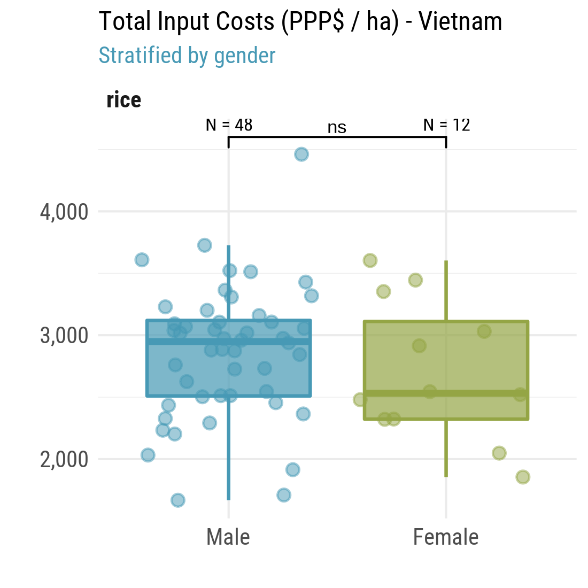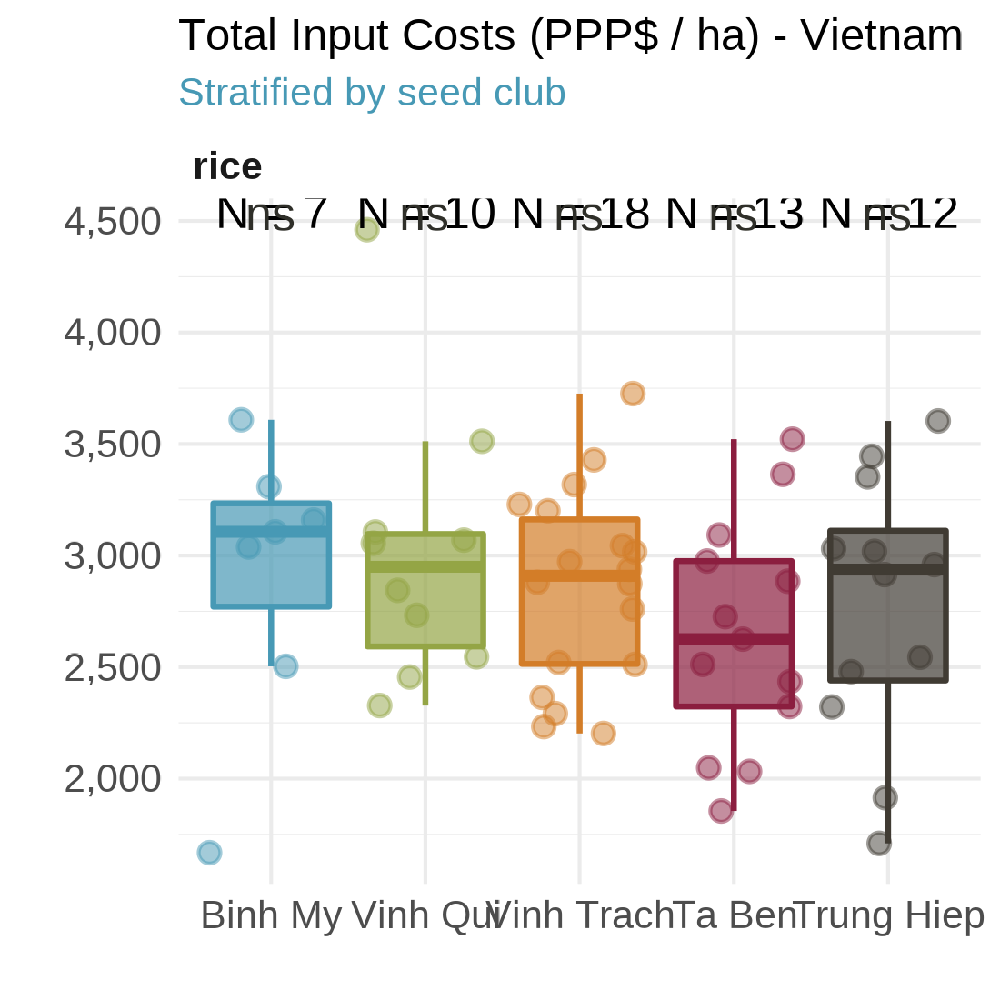
Breakdown across categories of farm input.
ttt(ppp ~ type | gender, data=hh_prod_cost, render=fmt,
caption="Input Costs in Absolute Terms by Gender (PPP$ / ha) - Vietnam")| type | Statistic | Male | Female |
|---|---|---|---|
| Seeds | mean | 281 | 228 |
| median | 270 | 220 | |
| sd | 91 | 34 | |
| Fertilizer | mean | 613 | 517 |
| median | 592 | 496 | |
| sd | 179 | 161 | |
| Pesticides | mean | 748 | 827 |
| median | 690 | 718 | |
| sd | 385 | 384 | |
| Labor | mean | 1,203 | 1,128 |
| median | 1,136 | 1,167 | |
| sd | 391 | 205 | |
| Marketing | mean | 14 | 3 |
| median | 0 | 0 | |
| sd | 49 | 12 |
tbl <- hh_prod_cost[, .(
ppp = mean(ppp, na.rm=T)
), keyby=.(gender, ssd, type)]
ggplot(tbl, aes(gender, ppp, fill=type)) +
geom_bar(stat="identity", position="fill", alpha=.7, width=.6, color="white") +
scale_y_continuous(labels=percent) +
facet_wrap(~ssd) +
labs(y="", x="",
title="Breakdown of Input Costs by Category - Vietnam",
subtitle="Stratified by gender and seed system") +
theme_def(legend.position="right")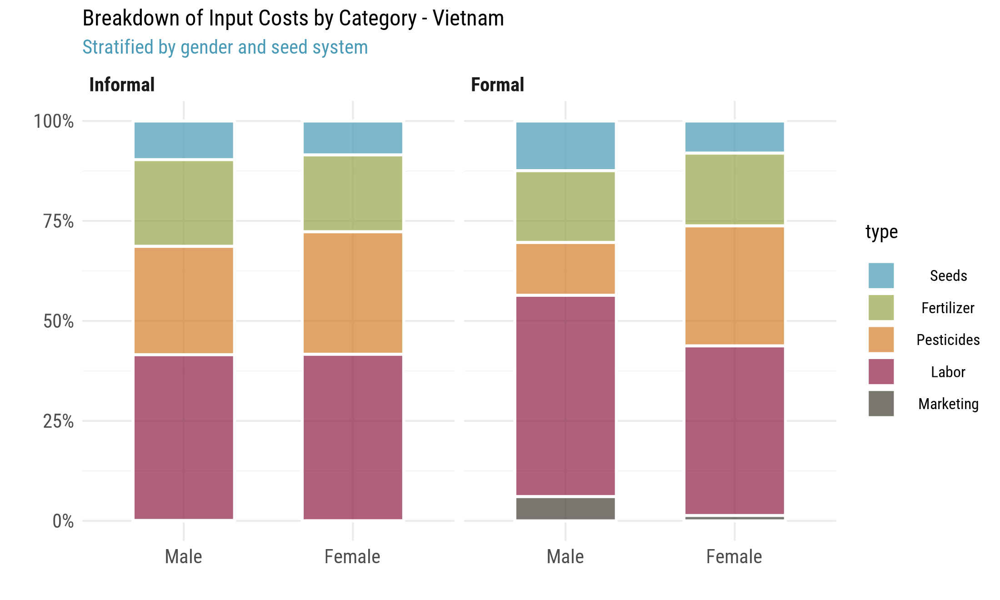
ttt(ppp ~ type | years, data=hh_prod_cost, render=fmt,
caption="Input Costs in Absolute Terms by Years in Seed Group (PPP$ / ha) - Vietnam")| type | Statistic | < 5 | ≥ 5 |
|---|---|---|---|
| Seeds | mean | 284 | 267 |
| median | 287 | 259 | |
| sd | 64 | 91 | |
| Fertilizer | mean | 648 | 578 |
| median | 616 | 538 | |
| sd | 183 | 176 | |
| Pesticides | mean | 810 | 750 |
| median | 721 | 680 | |
| sd | 363 | 391 | |
| Labor | mean | 1,147 | 1,200 |
| median | 1,080 | 1,167 | |
| sd | 406 | 351 | |
| Marketing | mean | 0 | 15 |
| median | 0 | 0 | |
| sd | 0 | 50 |
tbl <- hh_prod_cost[, .(
ppp = mean(ppp, na.rm=T)
), keyby=.(years, crop, type)]
ggplot(tbl, aes(years, ppp, fill=type)) +
geom_bar(stat="identity", position="fill", alpha=.7, width=.6, color="white") +
scale_y_continuous(labels=percent) +
facet_wrap(~crop) +
labs(y="", x="",
title="Breakdown of Input Costs by Category - Vietnam",
subtitle="Stratified by crop and years in seed club") +
theme_def(legend.position="right")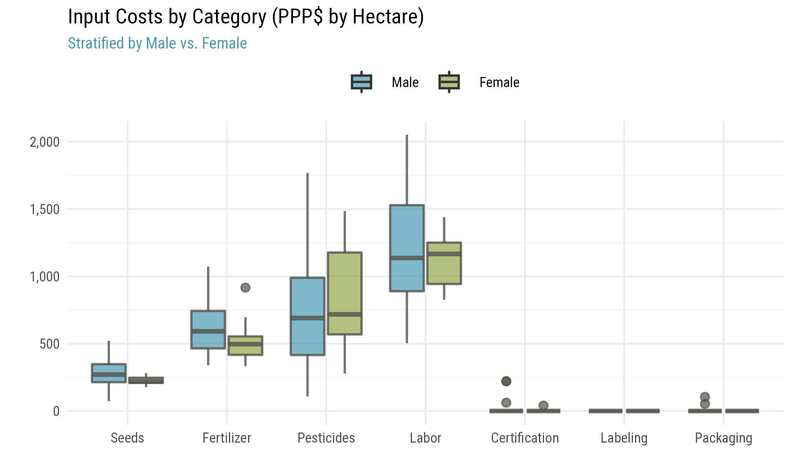
ttt(ppp ~ type | ssd, data=hh_prod_cost, render=fmt,
caption="Input Costs in Absolute Terms by Seed System Type (PPP$ / ha) - Vietnam")| type | Statistic | Informal | Formal |
|---|---|---|---|
| Seeds | mean | 265 | 347 |
| median | 261 | 311 | |
| sd | 80 | 132 | |
| Fertilizer | mean | 597 | 551 |
| median | 563 | 507 | |
| sd | 179 | 196 | |
| Pesticides | mean | 781 | 531 |
| median | 697 | 486 | |
| sd | 384 | 322 | |
| Labor | mean | 1,167 | 1,480 |
| median | 1,123 | 1,452 | |
| sd | 359 | 277 | |
| Marketing | mean | 2 | 149 |
| median | 0 | 168 | |
| sd | 14 | 88 |
tbl <- hh_prod_cost[, .(
ppp = mean(ppp, na.rm=T)
), keyby=.(crop, group, type)]
ggplot(tbl, aes(group, ppp, fill=type)) +
geom_bar(stat="identity", position="fill", alpha=.7, width=.6, color="white") +
scale_y_continuous(labels=percent) +
facet_wrap(~crop) +
labs(y="", x="",
title="Breakdown of Input Costs by Category - Vietnam",
subtitle="Stratified by seed club") +
theme_def(legend.position="right")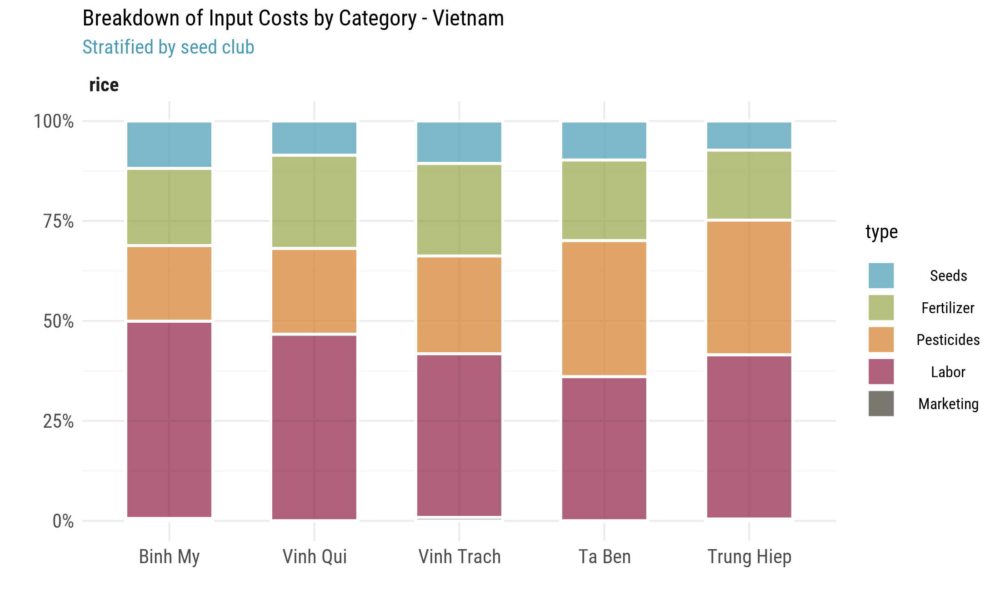
Are there significant differences across groups? We first compare input cost shares across gender, then across seed clubs.
ggBoxTest(hh_prod_cost,
aes(type, share, fill=gender, color=gender),
grp.c=aes(group=type), grp.s=aes(group=gender)) +
scale_y_continuous(labels=percent) +
facet_wrap(~crop) +
labs(x="", y="", fill="", color="",
title="Input Costs by Category (Percent of Total Costs by Ha) - Vietnam",
subtitle="Stratified by gender") +
theme_def(legend.position="top") 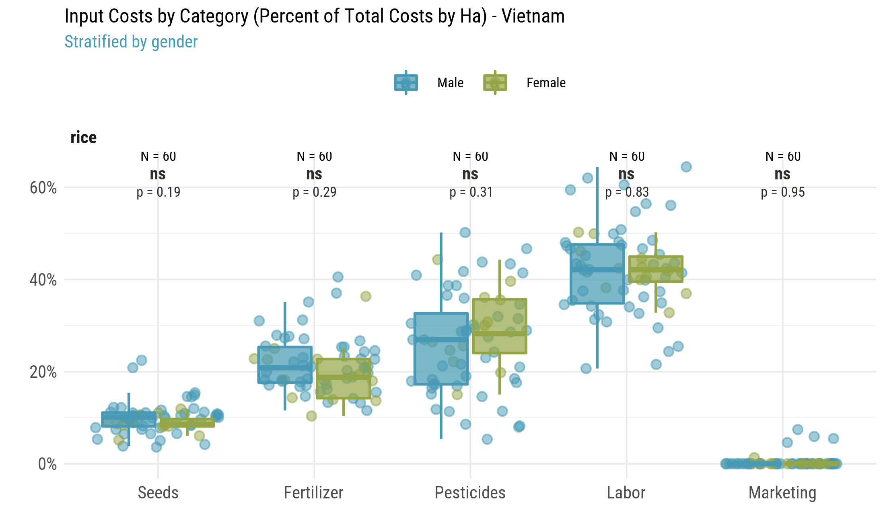
ggBoxTest(hh_prod_cost,
aes(type, share, fill=group, color=group),
grp.c=aes(group=type), grp.s=aes(group=group)) +
scale_y_continuous(labels=percent) +
facet_wrap(~crop) +
labs(x="", y="", fill="", color="",
title="Input Costs by Category (PPP$ by Hectare) - Vietnam",
subtitle="Stratified by seed club") +
theme_def(legend.position="top")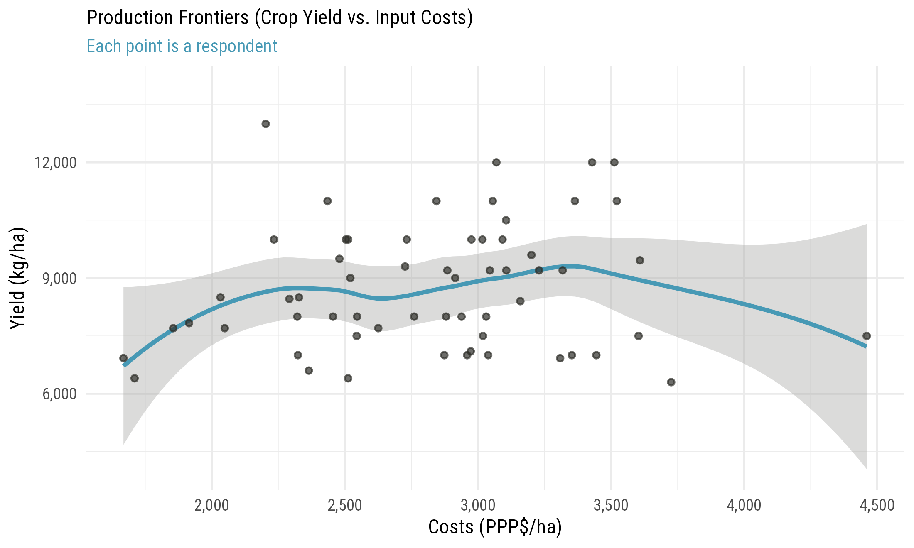
Efficiency
Differences in productivity measures (expected seed yields and sales) across groups.
ttt(yield_ha_kg ~ group | gender+crop, data=hh, render=fmt,
caption="Expected Rice Seed Yield (kg / ha) - Vietnam")| group | Statistic | rice | |
|---|---|---|---|
| Male | Female | ||
| Binh My | mean | 8,272 | NA |
| median | 8,400 | NA | |
| sd | 1,325 | NA | |
| Vinh Qui | mean | 9,850 | NA |
| median | 10,250 | NA | |
| sd | 1,717 | NA | |
| Vinh Trach | mean | 8,709 | 9,000 |
| median | 8,460 | 9,000 | |
| sd | 1,883 | NA | |
| Ta Ben | mean | 9,770 | 7,467 |
| median | 10,000 | 7,700 | |
| sd | 1,113 | 404 | |
| Trung Hiep | mean | 7,182 | 7,938 |
| median | 7,250 | 7,750 | |
| sd | 623 | 904 | |
ttt(sales_ha_kg ~ group | gender+crop, data=hh, render=fmt,
caption="Seed Sales (kg / ha) - Vietnam")| group | Statistic | rice | |
|---|---|---|---|
| Male | Female | ||
| Binh My | mean | 8,272 | NA |
| median | 8,400 | NA | |
| sd | 1,325 | NA | |
| Vinh Qui | mean | 9,620 | NA |
| median | 10,250 | NA | |
| sd | 2,040 | NA | |
| Vinh Trach | mean | 8,155 | 9,000 |
| median | 8,000 | 9,000 | |
| sd | 1,788 | NA | |
| Ta Ben | mean | 9,770 | 7,313 |
| median | 10,000 | 7,238 | |
| sd | 1,113 | 356 | |
| Trung Hiep | mean | 6,382 | 7,938 |
| median | 7,250 | 7,750 | |
| sd | 2,149 | 904 | |
ttt(yield_ha_kg ~ group | years+crop, data=hh, render=fmt,
caption="Realized Seed Sales (kg / ha) - Vietnam")| group | Statistic | rice | |
|---|---|---|---|
| < 5 | ≥ 5 | ||
| Binh My | mean | 6,948 | 9,265 |
| median | 6,923 | 9,330 | |
| sd | 45 | 666 | |
| Vinh Qui | mean | 7,833 | 10,714 |
| median | 8,000 | 11,000 | |
| sd | 289 | 1,220 | |
| Vinh Trach | mean | 8,850 | 8,626 |
| median | 9,100 | 8,230 | |
| sd | 1,842 | 1,911 | |
| Ta Ben | mean | NA | 9,238 |
| median | NA | 9,300 | |
| sd | NA | 1,406 | |
| Trung Hiep | mean | NA | 7,686 |
| median | NA | 7,500 | |
| sd | NA | 874 | |
ttt(sales_ha_kg ~ group | years+crop, data=hh, render=fmt,
caption="Realized Seed Sales (kg / ha) - Vietnam")| group | Statistic | rice | |
|---|---|---|---|
| < 5 | ≥ 5 | ||
| Binh My | mean | 6,948 | 9,265 |
| median | 6,923 | 9,330 | |
| sd | 45 | 666 | |
| Vinh Qui | mean | 7,833 | 10,386 |
| median | 8,000 | 11,000 | |
| sd | 289 | 1,984 | |
| Vinh Trach | mean | 8,850 | 7,683 |
| median | 9,100 | 7,600 | |
| sd | 1,842 | 1,565 | |
| Ta Ben | mean | NA | 9,203 |
| median | NA | 9,300 | |
| sd | NA | 1,453 | |
| Trung Hiep | mean | NA | 7,419 |
| median | NA | 7,500 | |
| sd | NA | 1,538 | |
Differences in efficiency measures across gender with mean comparison (Wilcoxon) p-value.
ggBoxTest(hh, aes(gender, yield_ha_kg, color=gender, fill=gender), cp=list(1:2)) +
scale_y_continuous(labels=comma) +
labs(x="", y="", fill="",
title="Expected Rice Seed Yield (kg / ha) - Vietnam",
subtitle="Stratified by gender") +
theme_def(legend.position="none")
ggBoxTest(hh, aes(gender, sales_ha_ppp, fill=gender), cp=list(1:2)) +
scale_y_continuous(labels=comma) +
labs(x="", y="", fill="",
title="Total Seed Sales (PPP$ / ha) - Vietnam",
subtitle="Stratified by gender") +
theme_def(legend.position="none")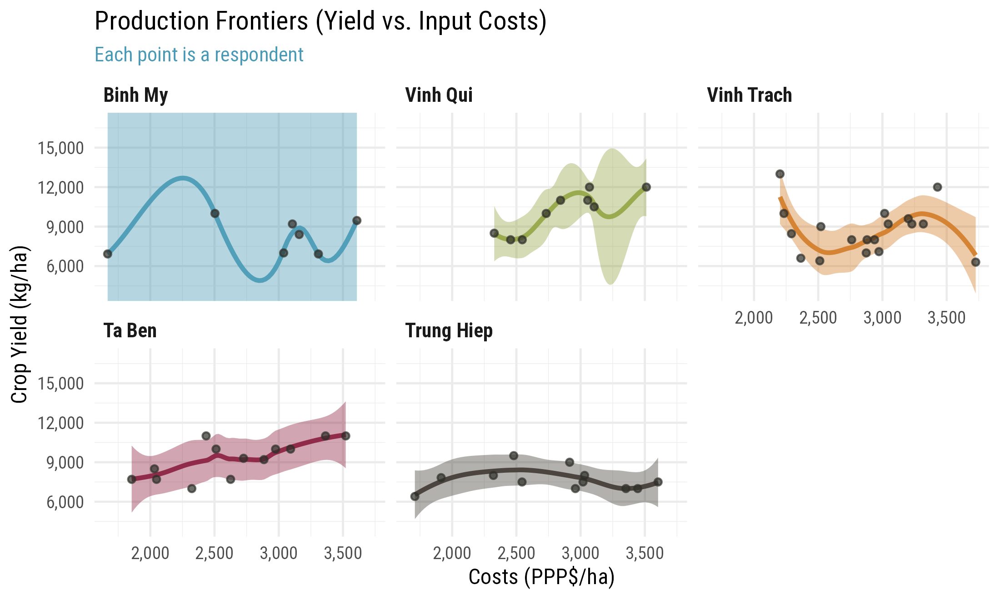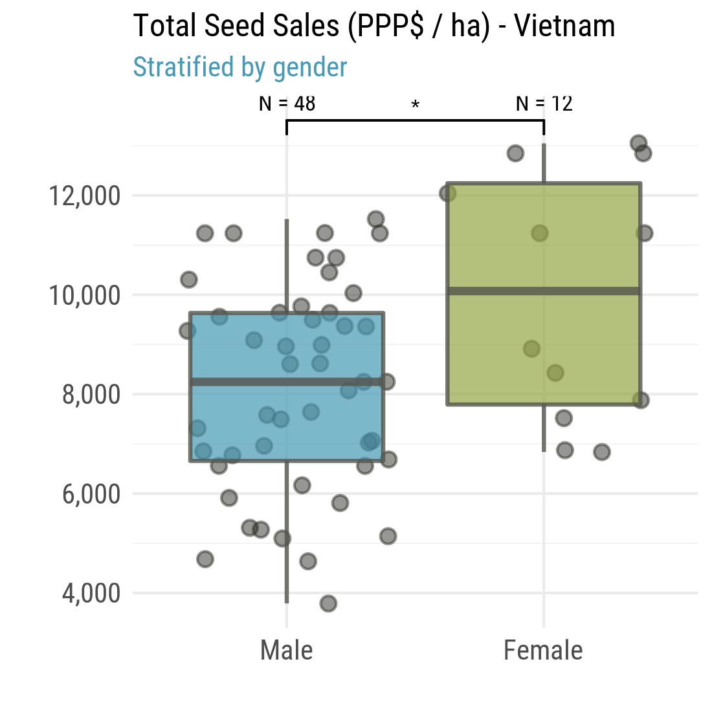
Differences in efficiency measures by years in seed club with mean comparison (Wilcoxon) p-value.
ggBoxTest(hh, aes(years, yield_ha_kg, color=years, fill=years), cp=list(1:2)) +
scale_y_continuous(labels=comma) +
labs(x="", y="", fill="",
title="Expected Seed Yield (kg / ha) - Vietnam",
subtitle="Stratified by years in seed club") +
theme_def(legend.position="none")
ggBoxTest(hh, aes(years, sales_ha_ppp, color=years, fill=years), cp=list(1:2)) +
scale_y_continuous(labels=comma) +
labs(x="", y="", fill="",
title="Total Seed Sales (PPP$ / ha) - Vietnam",
subtitle="Stratified by years in seed club") +
theme_def(legend.position="none")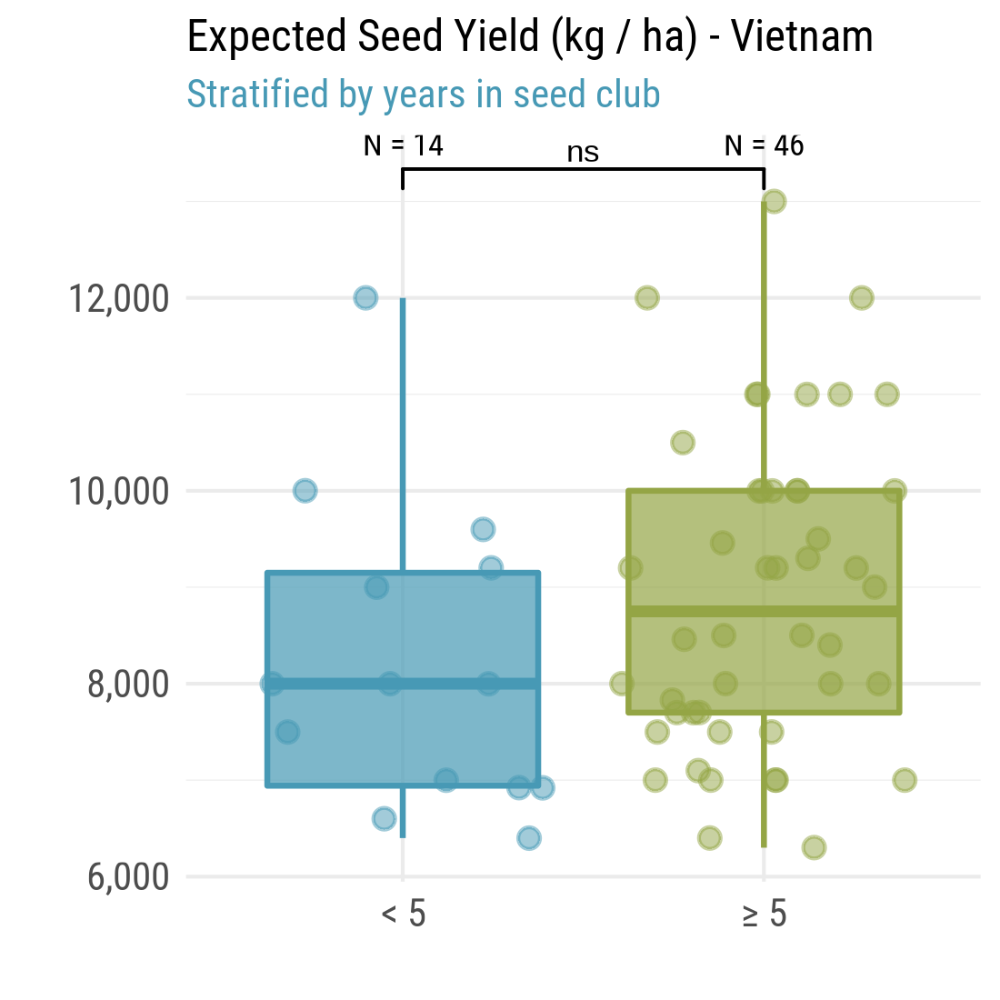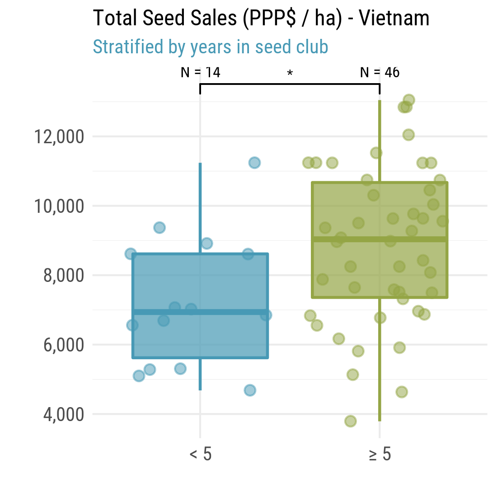
Differences in efficiency measures across seed clubs with global ANOVA p-value.
ggBoxTest(hh, aes(group, yield_ha_kg, color=group, fill=group)) +
scale_x_discrete(labels=label_wrap(5)) +
scale_y_continuous(labels=comma) +
labs(x="", y="", fill="",
title="Rice Seed Yield (Kg / ha) - Vietnam",
subtitle="Stratified by seed club") +
theme_def(legend.position="none")
ggBoxTest(hh, aes(group, sales_ha_ppp, color=group, fill=group)) +
scale_x_discrete(labels=label_wrap(5)) +
scale_y_continuous(labels=comma) +
labs(x="", y="", fill="",
title="Total Seed Sales (PPP$ / ha) - Vietnam",
subtitle="Stratified by seed club") +
theme_def(legend.position="none")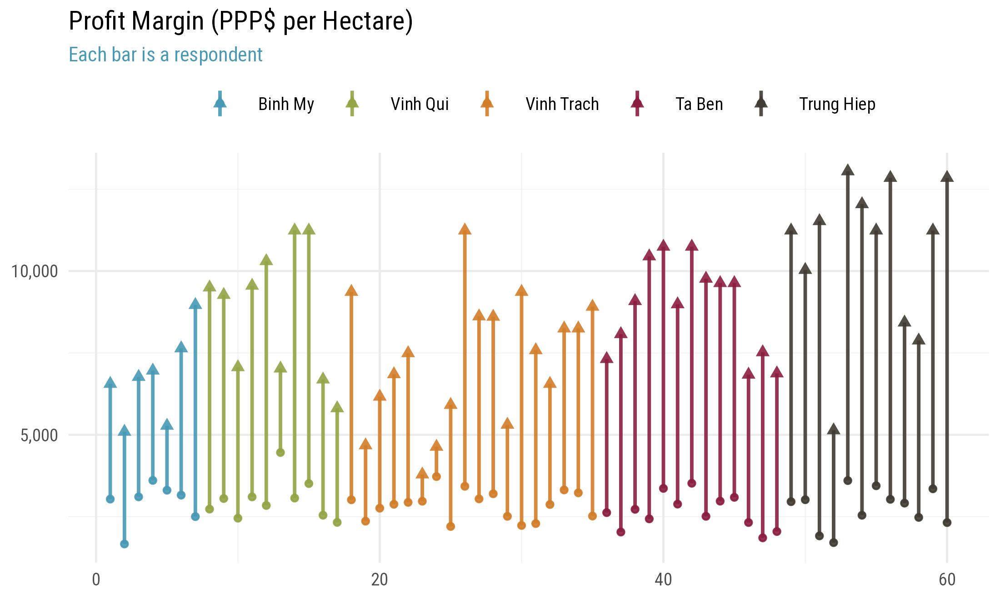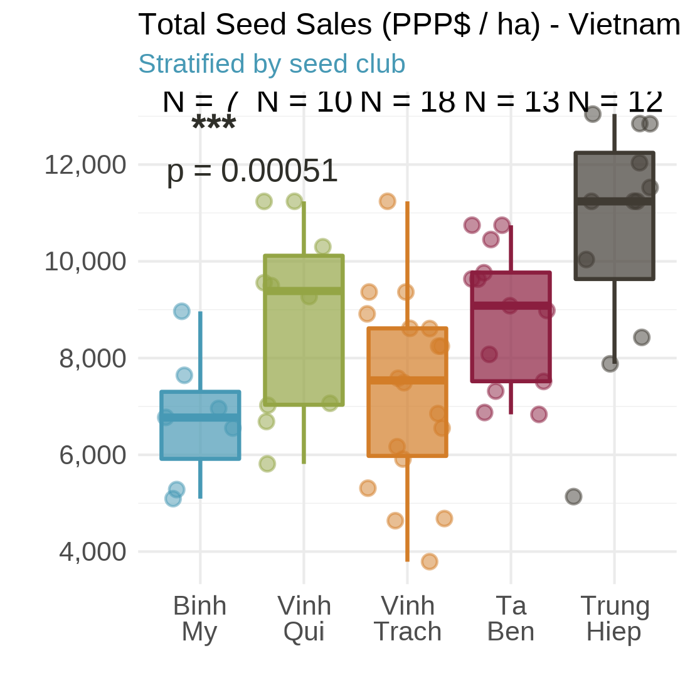
Looking at production frontiers (units of output vs. units of input). We expect S-shape curves with farmers at different levels of technical efficiency along the curve.
Note that Farmer VNM013 in Winh Qui has total costs over PPP$ 4,000/ha. He was excluded from the approximated curves below.
outlier <- hh[costs_ha_ppp > mean(costs_ha_ppp) + 3*sd(costs_ha_ppp), hhid]
kbl(
caption="Farmers with total input costs > mean + 3*sd",
hh[hhid %in% outlier, .(hhid, group, crop, yield_ha_kg, costs_ha_ppp)],
format.args=list(big.mark=",", digits=0))| hhid | group | crop | yield_ha_kg | costs_ha_ppp |
|---|---|---|---|---|
| VNM013 | Vinh Qui | rice | 7,500 | 4,461 |
ggplot(hh[!hhid %in% outlier], aes(costs_ha_ppp, yield_ha_kg)) +
geom_smooth(size=.8) +
geom_point(alpha=.7, shape=20, color=1) +
scale_x_continuous(labels=comma) +
scale_y_continuous(labels=comma) +
labs(x="", y="",
title="Production Frontier (Output vs. Input) - Vietnam",
subtitle="Each point is a respondent. Shade shows 90% (kg vs. PPP$ / ha)") +
theme_def(legend.position="none")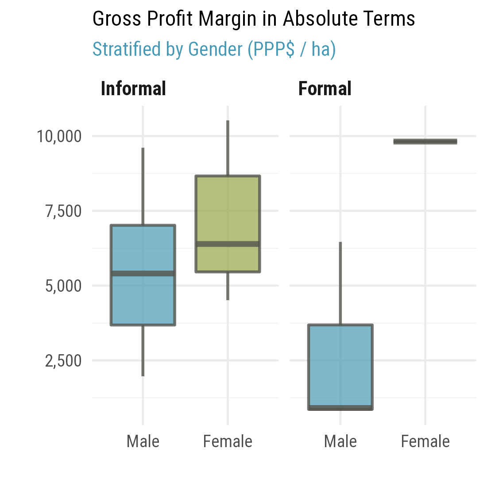
ggplot(hh[!hhid %in% outlier], aes(costs_ha_ppp, yield_ha_kg)) +
geom_smooth(aes(color=gender, fill=gender), size=.8, level=.9) +
geom_point(alpha=.7, shape=20) +
scale_x_continuous(labels=comma) +
scale_y_continuous(labels=comma) +
facet_wrap(~gender, scales="free_x") +
labs(x="", y="",
title="Production Frontier (Output vs. Input) - Vietnam",
subtitle="Each point is a respondent. Shade shows 90% CI (kg vs. PPP$ / ha)") +
theme_def(legend.position="none")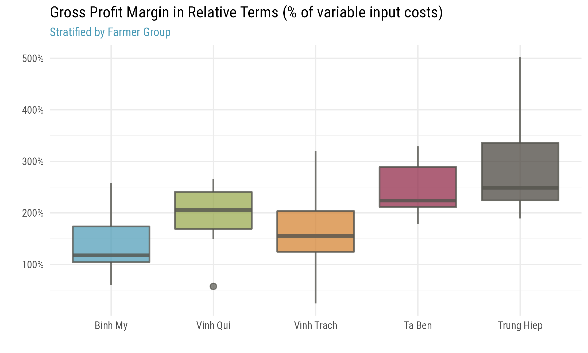
ggplot(hh[!hhid %in% outlier], aes(costs_ha_ppp, yield_ha_kg)) +
geom_smooth(aes(color=group, fill=group), size=.8, level=.9) +
geom_point(alpha=.7, shape=20) +
scale_x_continuous(labels=comma) +
scale_y_continuous(labels=comma) +
facet_wrap(~group) +
coord_cartesian(ylim=c(4000, 14000)) +
labs(x="", y="",
title="Production Frontier (Output vs. Input) - Vietnam",
subtitle="Each point is a respondent. Shade shows 90% CI (kg vs. PPP$ / ha)") +
theme_def(legend.position="none")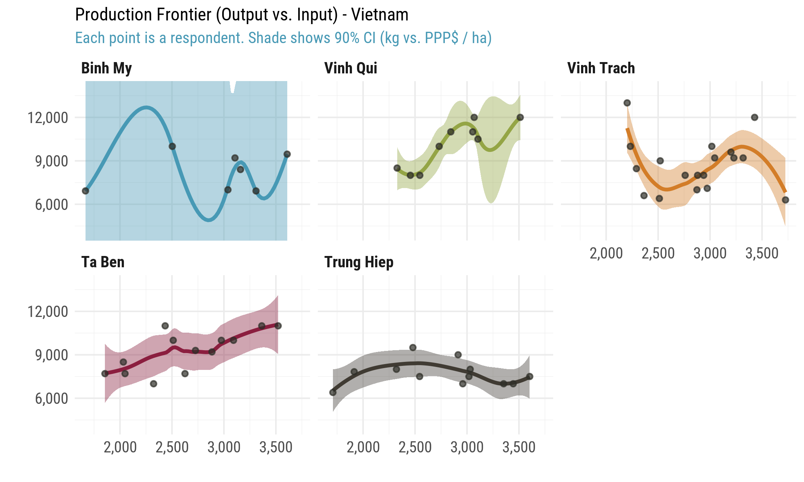
Profitability
Farmers’ gross profit margins by gender and years in seed club.
ttt(margin_ha_ppp ~ group | gender+years, data=hh, render=fmt,
caption="Mean Gross Profit Margin in Absolute Terms (PPP$ / ha) - Vietnam")| group | Statistic | < 5 | ≥ 5 | ||
|---|---|---|---|---|---|
| Male | Female | Male | Female | ||
| Binh My | mean | 2,971 | NA | 4,491 | NA |
| median | 3,427 | NA | 4,074 | NA | |
| sd | 869 | NA | 1,398 | NA | |
| Vinh Qui | mean | 3,773 | NA | 6,610 | NA |
| median | 4,144 | NA | 6,768 | NA | |
| sd | 1,072 | NA | 1,548 | NA | |
| Vinh Trach | mean | 4,889 | 6,391 | 3,946 | NA |
| median | 5,405 | 6,391 | 4,133 | NA | |
| sd | 1,968 | NA | 1,940 | NA | |
| Ta Ben | mean | NA | NA | 6,627 | 5,003 |
| median | NA | NA | 6,600 | 4,828 | |
| sd | NA | NA | 925 | 596 | |
| Trung Hiep | mean | NA | NA | 7,084 | 8,235 |
| median | NA | NA | 7,648 | 8,665 | |
| sd | NA | NA | 2,657 | 1,947 | |
ttt(margin_ha_sh ~ group | gender+years, data=hh, render=fmt_pct,
caption="Mean Gross Profit Margin in Relative Terms (% of total input costs) - Vietnam")| group | Statistic | < 5 | ≥ 5 | ||
|---|---|---|---|---|---|
| Male | Female | Male | Female | ||
| Binh My | mean | 127% | NA | 153% | NA |
| median | 116% | NA | 130% | NA | |
| sd | 74% | NA | 73% | NA | |
| Vinh Qui | mean | 136% | NA | 222% | NA |
| median | 163% | NA | 220% | NA | |
| sd | 69% | NA | 41% | NA | |
| Vinh Trach | mean | 162% | 254% | 148% | NA |
| median | 169% | 254% | 152% | NA | |
| sd | 49% | NA | 87% | NA | |
| Ta Ben | mean | NA | NA | 240% | 245% |
| median | NA | NA | 222% | 236% | |
| sd | NA | NA | 48% | 56% | |
| Trung Hiep | mean | NA | NA | 304% | 285% |
| median | NA | NA | 256% | 249% | |
| sd | NA | NA | 136% | 91% | |
ggplot(hh, aes(x=hhid, color=group)) +
geom_hline(aes(yintercept=0), color=1) +
geom_linerange(aes(ymin=0, ymax=margin_ha_ppp), size=.6) +
geom_point(aes(y=0), shape=20, size=1.4) +
geom_point(aes(y=margin_ha_ppp, shape=margin_ha_ppp < 0, fill=group), size=1.4) +
scale_y_continuous(labels=comma) +
scale_shape_manual(values=24:25) +
guides(x="none", shape="none") +
labs(x=NULL, y=NULL, color="", fill="",
title="Profit Margin (PPP$ / ha) - Vietnam",
subtitle="Each bar is a respondent's gross profit margin") +
theme_def(
legend.position="right",
panel.grid.major.x=element_blank()
)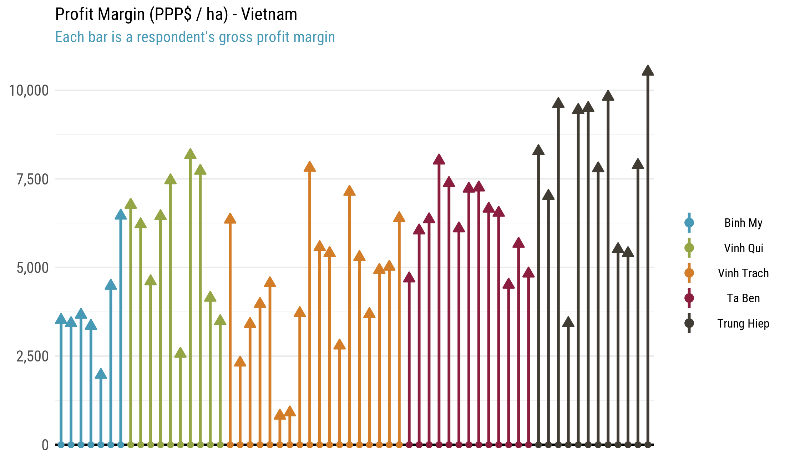
Farmers’ gross profit margins by gender and across seed clubs in both absolute terms and in relative terms as percentage of total input costs per hectare.
ggBoxTest(hh, aes(gender, margin_ha_ppp, color=gender, fill=gender), cp=list(1:2)) +
scale_y_continuous(labels=comma) +
labs(x="", y="", fill="",
title="Gross Profit Margin in Absolute Terms - Vietnam",
subtitle="Stratified by gender (PPP$ / ha)") +
theme_def(legend.position="none")
ggBoxTest(hh, aes(gender, margin_ha_sh, color=gender, fill=gender), cp=list(1:2)) +
scale_y_continuous(labels=percent) +
labs(x="", y="", fill="",
title="Gross Profit Margin in Relative Terms - Vietnam",
subtitle="Stratified by gender (% of total costs)") +
theme_def(legend.position="none")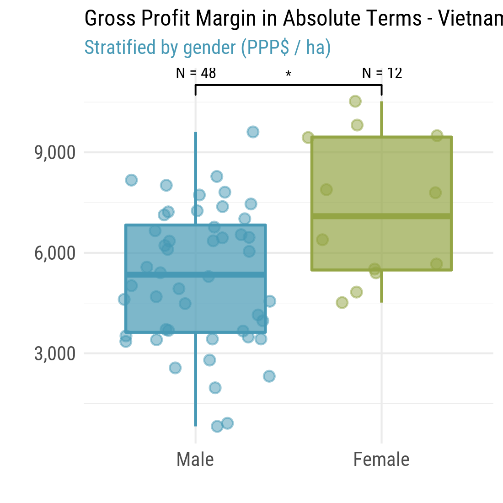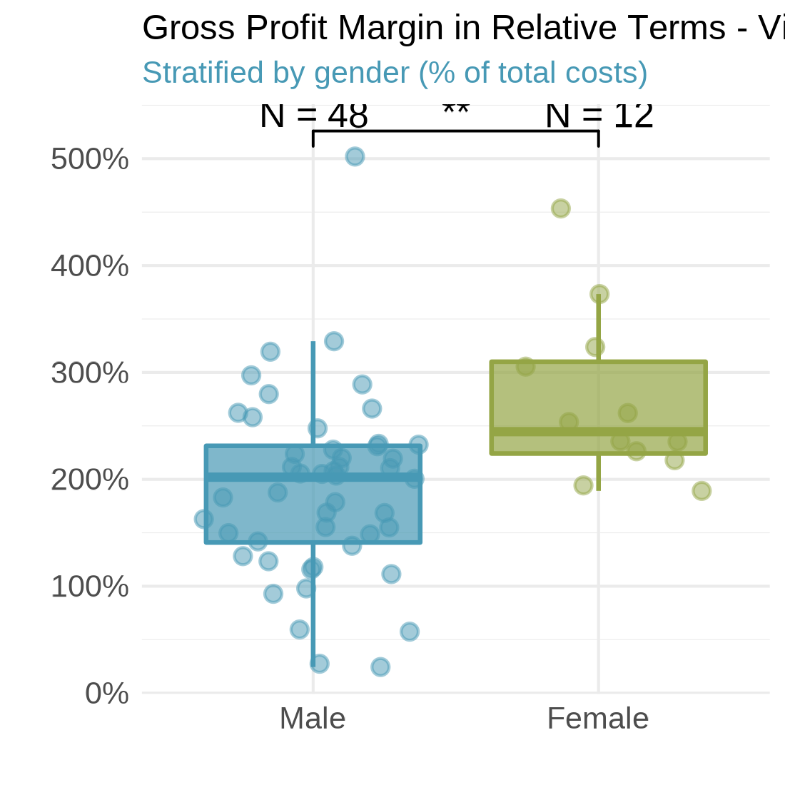
ggBoxTest(hh, aes(years, margin_ha_ppp, color=years, fill=years), cp=list(1:2)) +
scale_y_continuous(labels=comma) +
labs(x="", y="", fill="",
title="Gross Profit Margin in Absolute Terms - Vietnam",
subtitle="Stratified by years in seed club (PPP$ / ha)") +
theme_def(legend.position="none")
ggBoxTest(hh, aes(years, margin_ha_sh, color=years, fill=years), cp=list(1:2)) +
scale_y_continuous(labels=percent) +
labs(x="", y="", fill="",
title="Gross Profit Margin in Relative Terms - Vietnam",
subtitle="Stratified by years in seed club (% of total costs)") +
theme_def(legend.position="none")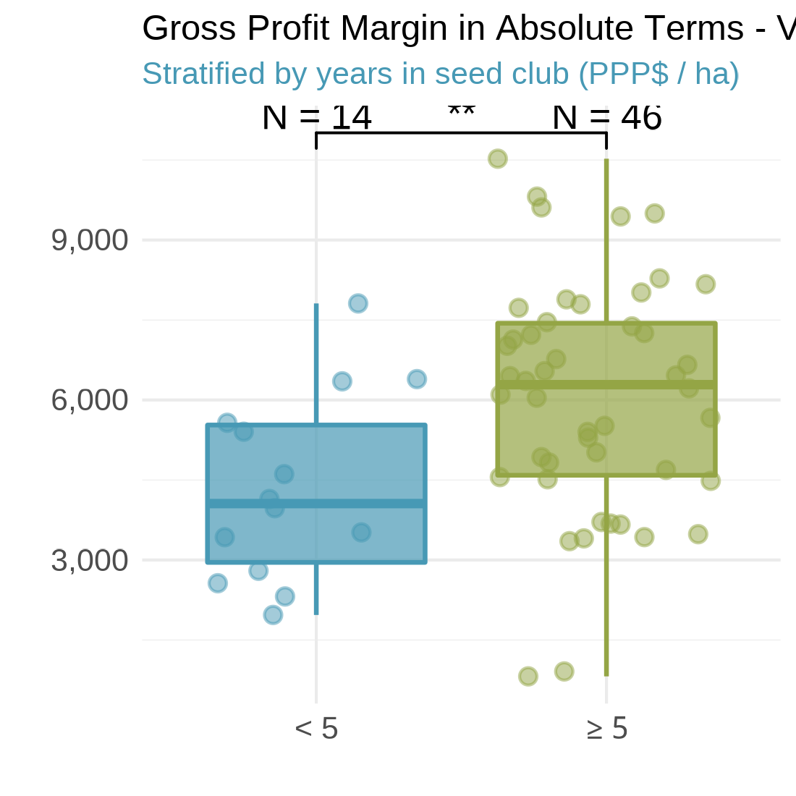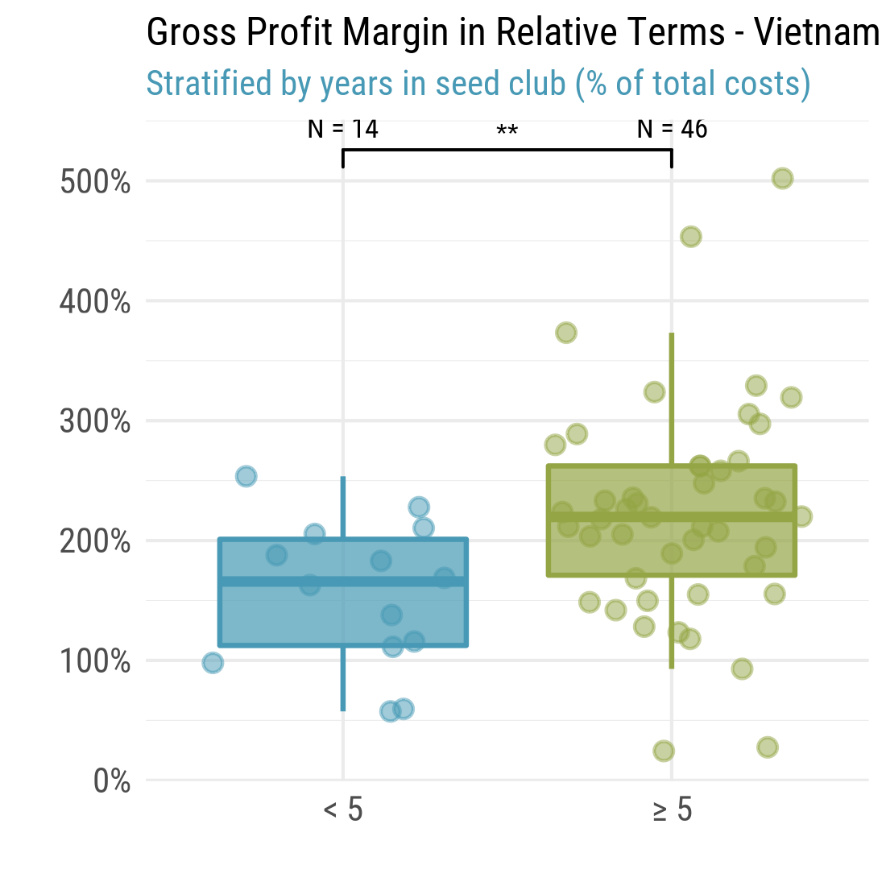
ggBoxTest(hh, aes(group, margin_ha_ppp, color=group, fill=group)) +
scale_x_discrete(labels=label_wrap(5)) +
scale_y_continuous(labels=comma) +
labs(x="", y="", fill="",
title="Gross Profit Margin in Absolute Terms - Vietnam",
subtitle="Stratified by seed club (PPP$ / ha)") +
theme_def(legend.position="none")
ggBoxTest(hh, aes(group, margin_ha_sh, color=group, fill=group)) +
scale_x_discrete(labels=label_wrap(5)) +
scale_y_continuous(labels=percent) +
labs(x="", y="", fill="",
title="Gross Profit Margin in Relative Terms - Vietnam",
subtitle="Stratified by seed club (% of total costs)") +
theme_def(legend.position="none")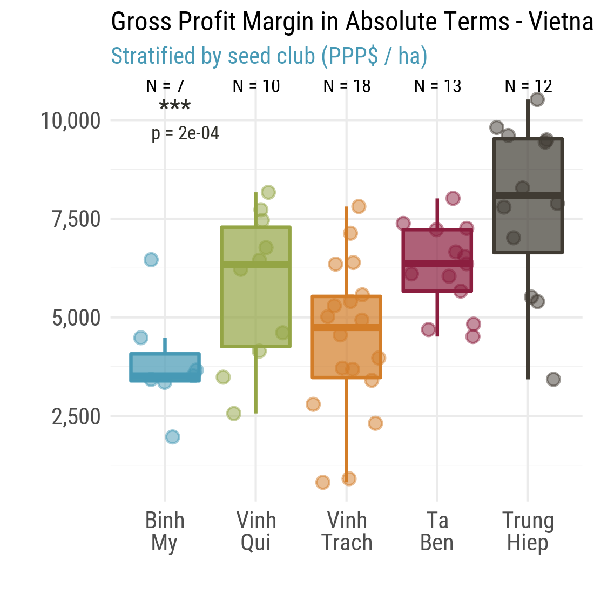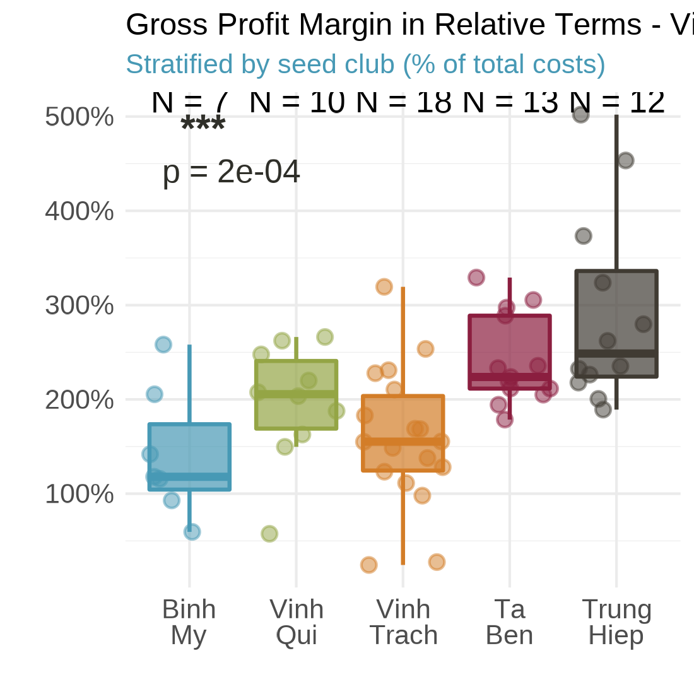
ggplot(hh[!hhid %in% outlier], aes(member_years, margin_ha_ppp)) +
geom_smooth(size=.8) +
geom_point(alpha=.7, shape=20) +
scale_x_continuous(limits=c(0, 22)) +
scale_y_continuous(labels=comma) +
labs(x="", y="", color="",
title="Gross Profit Margin in Absolute Terms vs. Years in Seed Club - Vietnam",
subtitle="Each point is a respondent (years vs. PPP$)") +
theme_def(legend.position="top")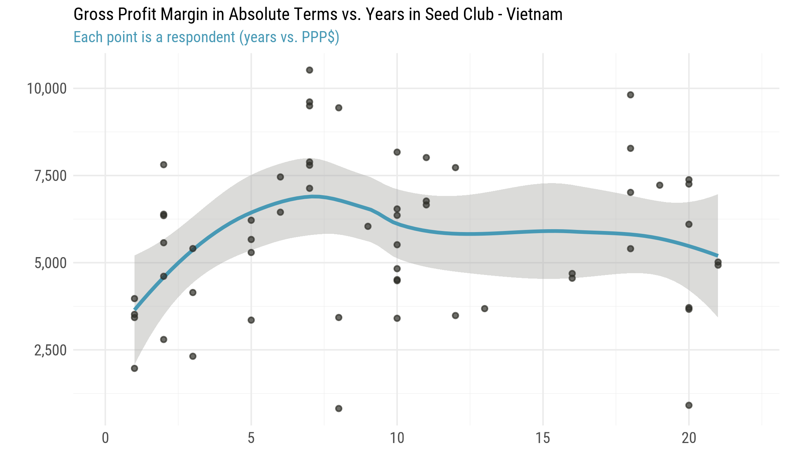
Correlation
Significant pairwise associations.
ggpairs(
hh[, .(`seed club`=group, `age`=age_num, `years in club`=member_years,
`costs PPP$`=costs_ha_ppp, `seed yield kg/ha`=yield_ha_kg,
`margin PPP$`=margin_ha_ppp, `margin %`=margin_ha_sh)],
upper = list(
continuous="cor",
combo=wrap("summarise_by", color=pal[1:5], size=2)),
lower = list(
continuous=wrap("smooth", shape=NA),
combo=wrap("box_no_facet", fill=pal[1:5], alpha=.8)),
diag = list(
continuous=wrap("densityDiag", fill=NA),
discrete=wrap("barDiag", fill=pal[1:5], alpha=.8)),
title="Correlogram stratified by seed club - Vietnam"
) +
theme_def(
strip.text=element_text(hjust=.5),
axis.text.x=element_text(angle=-45),
panel.grid.major=element_blank()
)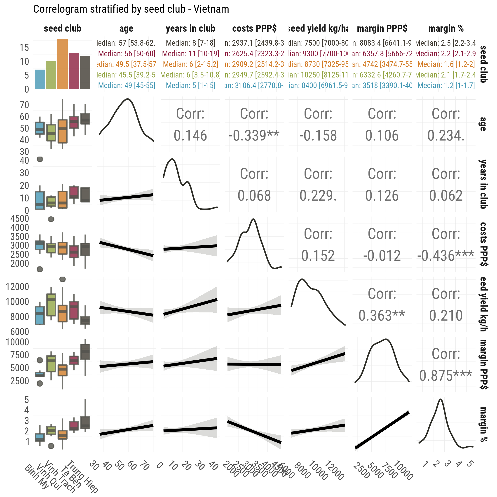
ggpairs(
hh[, .(gender, `age`=age_num, `years in club`=member_years,
`costs PPP$`=costs_ha_ppp, `seed yield kg/ha`=yield_ha_kg,
`margin PPP$`=margin_ha_ppp, `margin %`=margin_ha_sh)],
upper = list(
continuous="cor",
combo=wrap("summarise_by", color=pal[1:2], size=2)),
lower = list(
continuous=wrap("smooth", shape=NA, color=hh[, pal[gender]]),
combo=wrap("box_no_facet", fill=pal[1:2], alpha=.8)),
diag = list(
continuous=wrap("densityDiag", fill=NA),
discrete=wrap("barDiag", fill=pal[1:2], alpha=.8)),
title="Correlogram stratified by gender - Vietnam"
) +
theme_def(
strip.text=element_text(hjust=.5),
panel.grid.major=element_blank()
)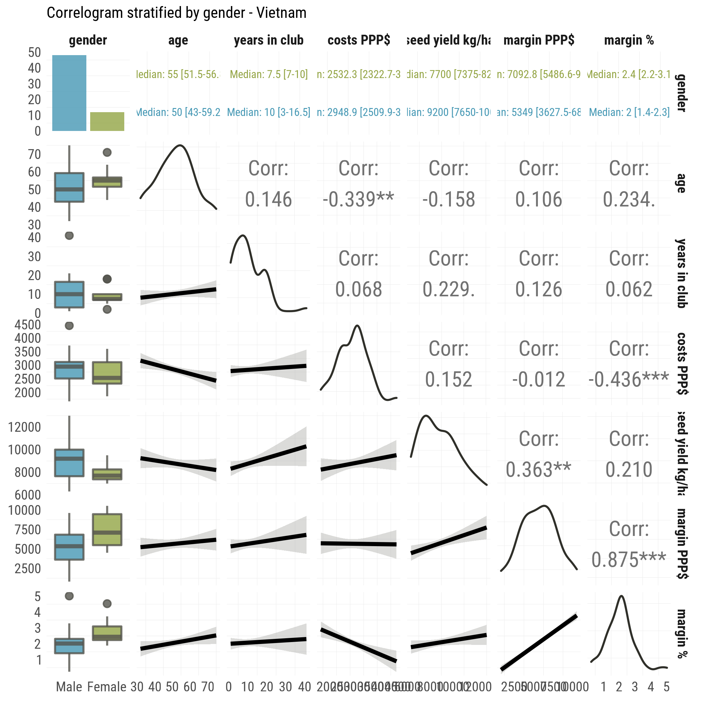
ggpairs(
hh[, .(`years in club`=years, `age`=age_num,
`costs PPP$`=costs_ha_ppp, `seed yield kg/ha`=yield_ha_kg,
`margin PPP$`=margin_ha_ppp, `margin %`=margin_ha_sh)],
upper = list(
continuous="cor",
combo=wrap("summarise_by", color=pal[1:2], size=2)),
lower = list(
continuous=wrap("smooth", shape=NA, color=hh[, pal[gender]]),
combo=wrap("box_no_facet", fill=pal[1:2], alpha=.8)),
diag = list(
continuous=wrap("densityDiag", fill=NA),
discrete=wrap("barDiag", fill=pal[1:2], alpha=.8)),
title="Correlogram stratified by years in seed club - Vietnam"
) +
theme_def(
strip.text=element_text(hjust=.5),
panel.grid.major=element_blank()
)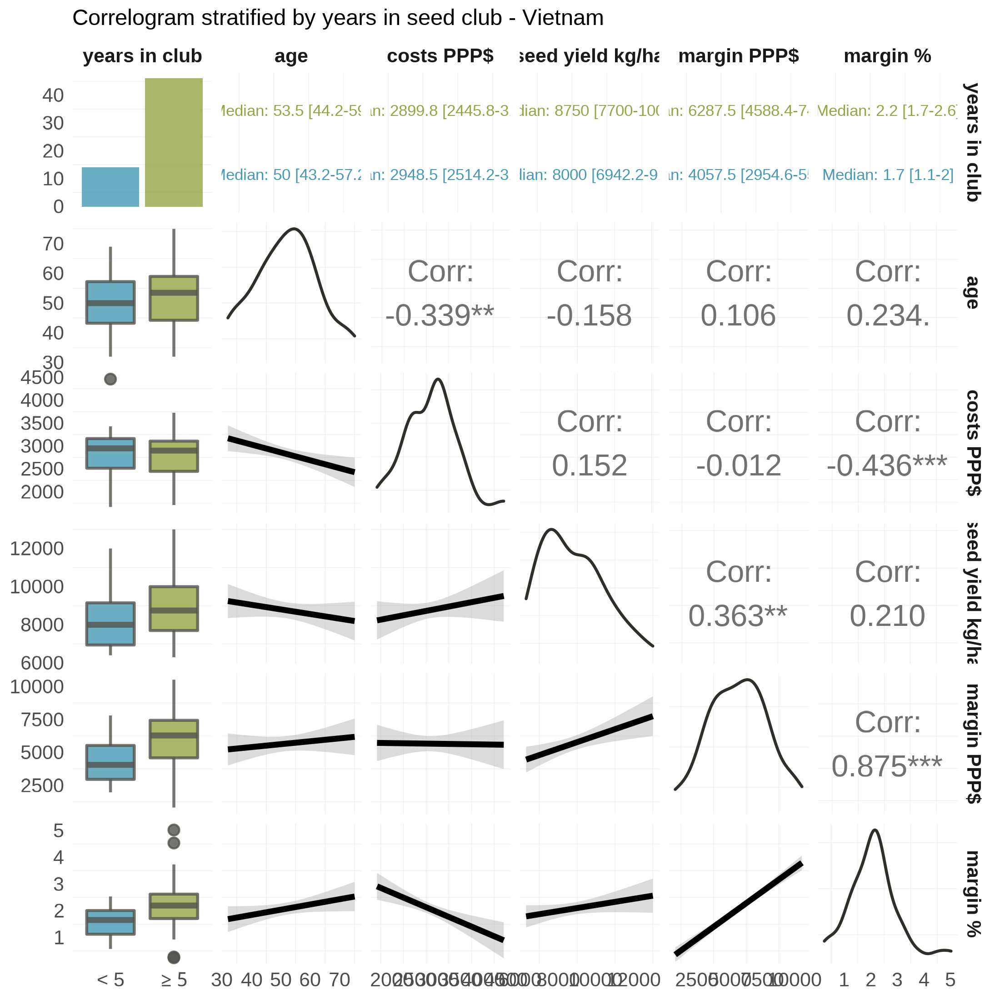
saveRDS(hh, "../tmp/data_vnm.rds")